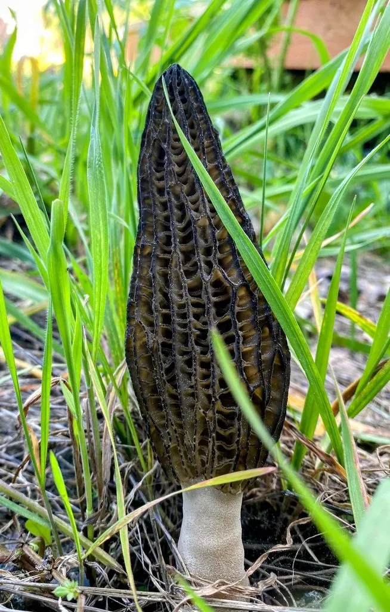

真菌 · 真菌界
梯棱羊肚菌 Morchella importuna

梯棱羊肚菌是人工栽培最广的羊肚菌之一，菌盖表面有梯状排列的凹坑与棱脊，春季出菇，鲜香脆嫩，必须熟食。
- 分类
- 门子囊菌门纲盘菌纲目盘菌目科羊肚菌科属羊肚菌属
- 栖息环境
- 杨、柳等阔叶林缘、果园、火烧迹地与腐殖质丰富的土壤，春季雨后出菇
- 地理分布
- 中国四川、云南、河南、湖北等地，欧洲与北美也有分布
- 保护级别
- 暂无评估（IUCN 未评估，中国未列入重点保护名录）
物种志
梯棱羊肚菌是子囊菌门羊肚菌科的大型子囊菌，属于黑色羊肚菌类群。子实体由菌盖和菌柄组成：菌盖圆锥形至卵圆形，长 5–10 cm，表面由纵向的棱脊与横向的短棱交织成梯状凹坑，凹坑内着生子实层，颜色由灰褐到深褐；菌柄白色至淡黄色，圆柱形，表面有细小的颗粒状突起，基部稍膨大。孢子印淡黄色。
梯棱羊肚菌多在春季雨后出菇，喜生于杨树、柳树等阔叶树的林缘、果园和火烧迹地，也常出现在人工堆放的腐殖土上，是中国最早实现大规模人工栽培的羊肚菌种类之一。它兼有菌根共生与腐生能力，栽培时需低温刺激才能形成原基。羊肚菌菌肉脆嫩、香气浓郁，可炒食、炖汤和干制，但生菌含有微量毒素，必须充分加热后才能食用。
形态与习性
- 菌盖圆锥形，长 5–10 cm，梯状凹坑
- 菌柄白色至淡黄，表面有颗粒状突起
- 孢子印淡黄色
- 出菇期春季雨后，需低温刺激
- 栽培中国最早大规模栽培的羊肚菌之一
- 食用性可食，必须充分加热
- 生境阔叶林缘、果园与火烧迹地
趣味知识
- 菌盖上的凹坑像梯子一样排列，是梯棱羊肚菌得名的原因。
- 它属于黑色羊肚菌类群，菌盖颜色比黄色羊肚菌深。
- 人工栽培需要低温刺激才能形成原基，所以多在冬春季节播种。
- 羊肚菌生食有毒，必须彻底加热后再吃。